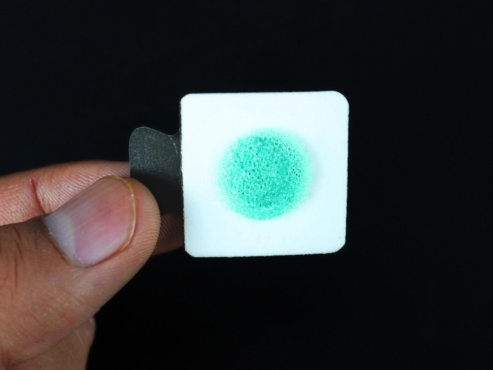
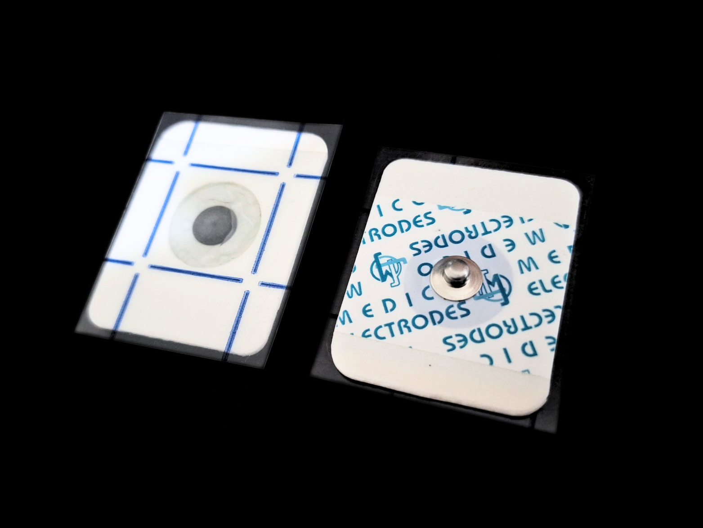
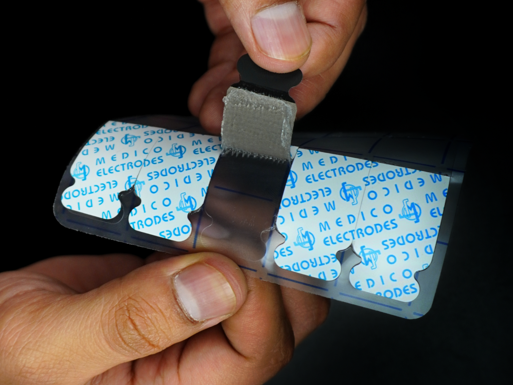
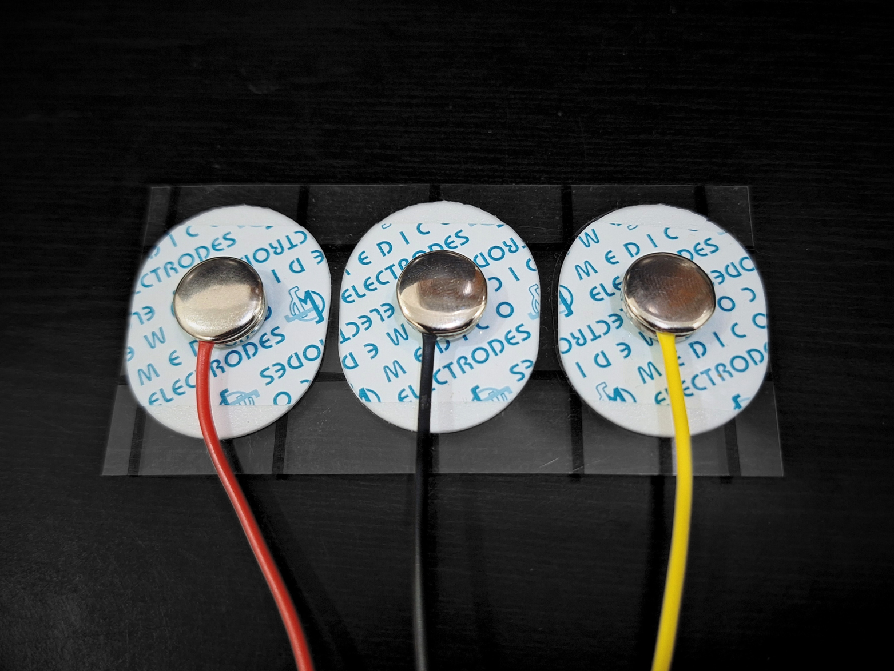
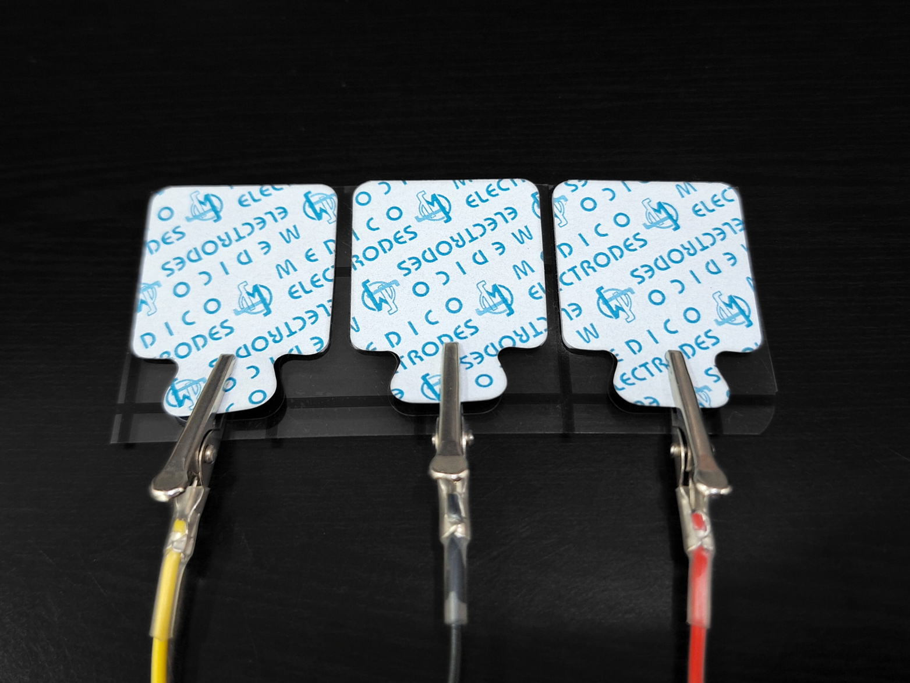
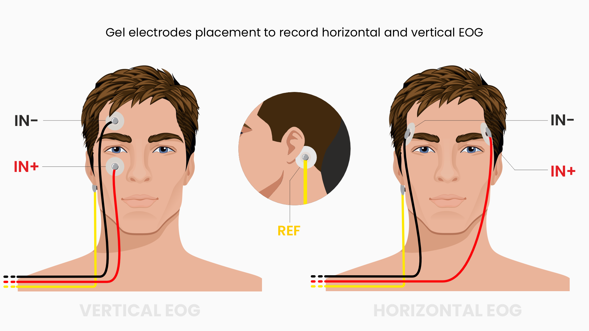
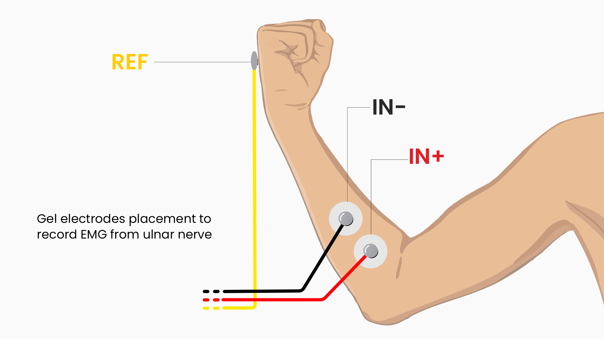
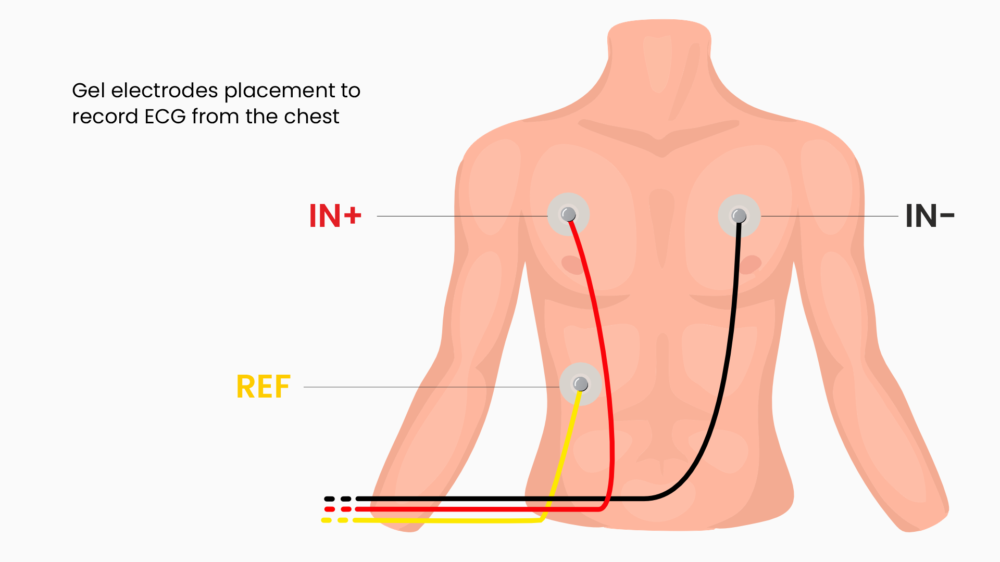
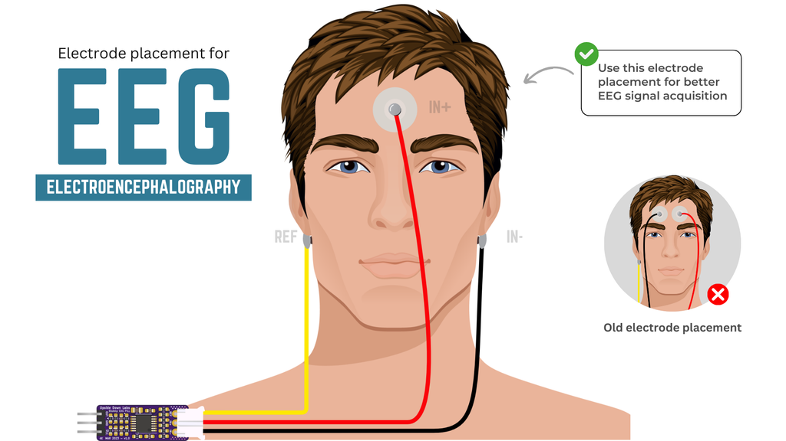

Menggunakan Elektroda Gel#
Ringkasan#
Elektroda gel adalah jenis elektroda yang diterapkan pada permukaan kulit untuk mentransmisikan sinyal listrik yang ada di permukaan kulit ke perangkat perekaman atau pemantauan. Elektroda ini menggunakan hydrogel konduktif untuk meningkatkan antarmuka antara elektroda Ag-AgCl dan kulit, meningkatkan kualitas sinyal dengan mengurangi impedansi dan meningkatkan kontak listrik. Elektroda ini sering digunakan untuk merekam sinyal biopoten sial seperti Elektrokardiografi (ECG), Elektroensefalografi (EEG), Elektromiografi (EMG), dan Elektrookulografi (EOG).
Komponen utama dalam elektroda gel#
Bahan elektroda: Elektroda itu sendiri biasanya terbuat dari bahan konduktif seperti Ag-AgCl, yang umum digunakan karena stabilitas dan biokompatibilitasnya.
Hidrogel: Hidrogel diterapkan pada elektroda atau tertanam di dalamnya. Gel ini membantu menjaga koneksi listrik yang konsisten dengan kulit dengan mengurangi impedansi di antarmuka.
Pelapis: Elektroda gel memiliki berbagai jenis pelapis seperti busa, kain, dan cleartape.
Perekat: Elektroda gel memiliki antarmuka seperti lem lengket yang disebut perekat yang memungkinkannya menempel kuat pada kulit Anda, dapat berupa jenis berbeda seperti hydrogel (di mana hydrogel bertindak sebagai gel konduktif dan perekat), standar, dan agresif.
Jenis elektroda gel#
1. Klasifikasi berdasarkan kandungan air#
Di bawah ini adalah elektroda gel yang dikategorikan berdasarkan kandungan air yang ada dalam hydrogel:
a. Elektroda gel cair#
Elektroda ini memiliki hydrogel dengan kandungan air yang lebih tinggi yang memberikan konduktivitas yang sangat baik tetapi dapat mengering seiring waktu, mengurangi efektivitasnya. Mereka lebih disukai digunakan jika Anda memiliki kulit kering dan/atau Anda ingin merekam data biopoten sial untuk durasi waktu yang singkat.

b. Elektroda gel padat#
Elektroda ini mengandung hydrogel yang lebih padat atau seperti jelly. Mereka kurang rentan mengering dibandingkan elektroda gel cair dan memiliki adhesi yang kuat.

c. Elektroda hydrogel permukaan penuh#
Ini adalah jenis elektroda gel padat di mana hydrogel memiliki kandungan air minimal, menutupi seluruh permukaan elektroda dan bertindak sebagai perekat. Elektroda ini lebih nyaman untuk pemantauan jangka panjang. Mereka menawarkan adhesi, konduktivitas yang baik dan kurang mungkin menyebabkan iritasi kulit.

2. Klasifikasi berdasarkan konektivitas#
a. Menghubungkan melalui snap#
Beberapa elektroda memiliki konektor snap logam di atasnya yang memungkinkan Anda menghubungkan BioAmp Snap Cable dengan menjepret bagian elektroda kering kabel ke elektroda.

b. Menghubungkan melalui tab#
Beberapa elektroda tidak memiliki konektor snap logam di atasnya, sebaliknya mereka memiliki tab konduktif yang memanjang dari permukaan elektroda. Anda dapat langsung menggunakan BioAmp Alligator Cable untuk menghubungkan ke tab.

Menggunakan elektroda#
Tentukan area target dari mana Anda ingin merekam sinyal biopoten sial.
Warning
Untuk orang dengan kulit sensitif, disarankan untuk menggunakan elektroda gel dengan perekat hydrogel/standar atau gunakan BioAmp Bands.
1. Persiapan Kulit#
Hapus rambut berlebih di area target. Aplikasikan gel persiapan kulit Nuprep pada permukaan kulit di mana elektroda akan ditempatkan untuk menghilangkan sel kulit mati dan membersihkan kulit dari kotoran. Setelah menggosok permukaan kulit secara menyeluruh, bersihkan dengan alcohol swab atau wet wipe.
Untuk informasi lebih lanjut, silakan lihat langkah-langkah detail Panduan Persiapan Kulit.
Note
Selalu pastikan bahwa area kulit yang disiapkan kering sebelum menerapkan elektroda gel.
2. Menghubungkan kabel#
Hubungkan BioAmp Snap/Alligator Cable pada elektroda gel.
3. Penempatan elektroda#
Kupas pelapis plastik dan tempatkan elektroda pada permukaan kulit target Anda sesuai dengan koneksi yang diarahkan dengan setiap hardware BioAmp.

Penempatan elektroda gel untuk perekaman sinyal EOG#

Penempatan elektroda gel untuk perekaman sinyal EMG#

Penempatan elektroda gel untuk perekaman sinyal ECG#

Penempatan elektroda gel untuk perekaman sinyal EEG#
Tip
Saat menempatkan elektroda gel pada kulit, pastikan untuk menempatkan tab non-lengket elektroda ke arah berlawanan dengan pertumbuhan rambut Anda. Ini memungkinkan Anda menghapus elektroda dengan mudah tanpa menarik banyak rambut tubuh.
Menghapus elektroda#
Setelah selesai dengan perekaman sinyal Anda, tarik tab non-lengket dengan lembut ke arah pertumbuhan rambut tubuh Anda untuk menghapus elektroda gel dari kulit.
Untuk menghapus residu gel dengan wet wipe/alcohol swab.
Untuk menghapus residu perekat, aplikasikan sedikit minyak pada kulit Anda dan gosok dengan lembut selama beberapa menit untuk melarutkan perekat, lalu lap dengan kain kering.
Important
Anda tidak boleh menggunakan air & sabun untuk membersihkan residu perekat, itu larut dalam minyak dan harus dilarutkan dengan minyak sebelum menghapusnya dengan kain kering. Menggunakan air dan sabun dapat membuatnya menempel lebih keras dan mengiritasi kulit Anda.